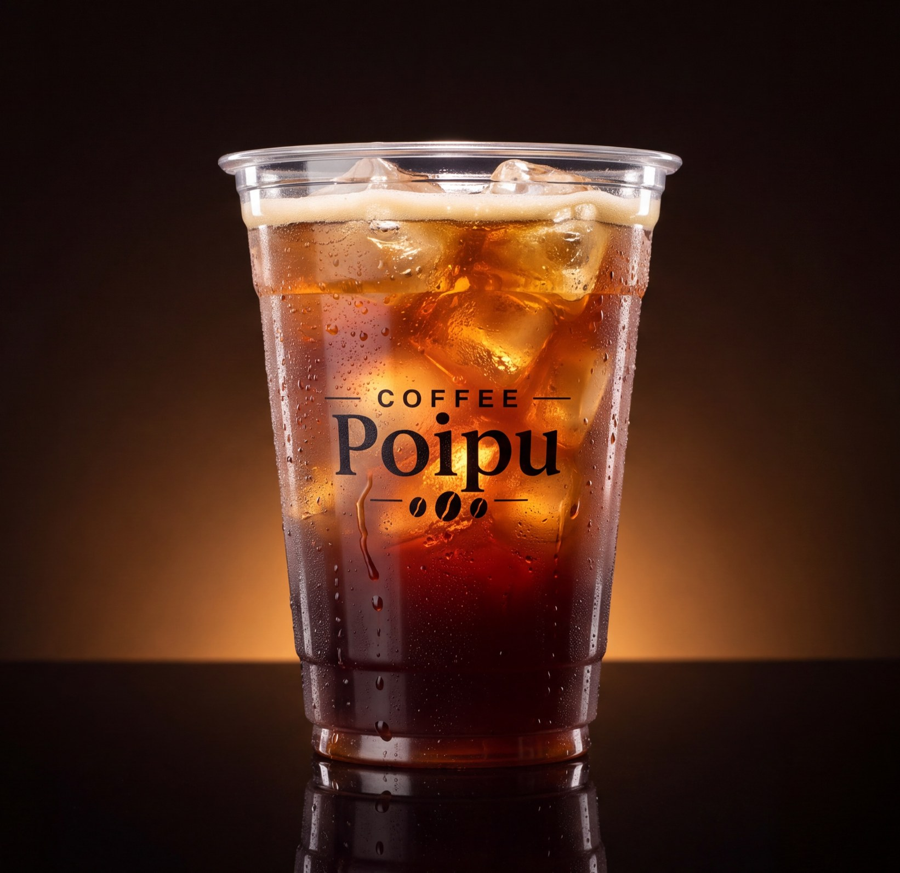

- Poipu Tahin 235 ₺
- Poipu Antep 245 ₺
- Poipu Pumpkin 235 ₺
- Poipu Hibiscus 225 ₺
- Poipu Mango 225 ₺
- Poipu Lime 225 ₺
SOĞUKLAR
- Espresso Milkshake 215 ₺
- Milkshake 235 ₺
- Smoothie 215 ₺ orman meyveli · çilekli
- Frozen 200 ₺ mango · çilek · limon · ananas · redmint
- Taze Portakal Suyu 190 ₺
- Churchill 210 ₺

Iced Americano
175 ₺